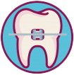
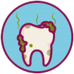
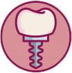
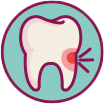
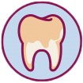
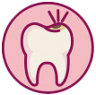

¿A qué edad es bueno asistir al dentista?
Se recomienda acudir a la primera revisión a partir de los 4-5 años (siempre y cuando antes no se observe ninguna alteración o molestia en los dientes).
¿Por qué tengo mal aliento? ¿Tiene tratamiento?
El mal aliento o halitosis está asociado a una carga bacteriana importante que se aloja entre los dientes y las encías,suele estar relacionado con una higiene bucal pobre o poco efectiva.El tratamiento de la halitosis consistirá en realizar una limpieza bucal profunda además de recomendar un colutorio y pasta dentífrica especiales, así como una técnica de cepillado específica.
¿Un implante es para toda la vida? ¿Requiere algún cuidado especial?
Ninguno de los tratamientos que se realizan en el dentista es para toda la vida, y los implantes tampoco. Igualmente que un paciente ha perdido sus dientes por una enfermedad periodontal avanzada (piorrea), también podría llegar a perder los implantes en el caso de no seguir los consejos de su dentista en cuanto a higiene y revisiones periódicas.
Si tengo un dolor dental y desaparece al poco tiempo, ¿debería acudir al dentista?
Siempre que se tiene dolor dental se debe acudir al dentista a pesar de que éste desaparezca al poco tiempo. Normalmente es indicativo de que algo está ocurriendo y lo importante es averiguar si ha sido algo casual o está comenzando alguna patología (caries, infección, erupción de una muela del juicio…).
¿Para qué sirve la revisión dental y cuál sería la periodicidad recomendada?
La revisión dental consiste en una inspección intraoral de los dientes, encías y tejidos blandos (mejillas, labios y lengua) para identificar y/o descartar algún problema bucodental a tiempo. La periodicidad varía según cada persona y su estado bucodental, pero para un individuo sano se recomienda una revisión cada 6 meses.
Si estoy embarazada, ¿puedo realizarme algún tratamiento dental?
El segundo trimestre es el momento en el que se puede realizar algún tratamiento de urgencia, siendo el primer y tercer trimestre los más críticos en cuanto al tratamiento dental. Lo ideal es hablar con el dentista si se está buscando el embarazo para hacer una revisión dental y si fuera necesario, realizar cualquier tratamiento antes de quedarse en estado.